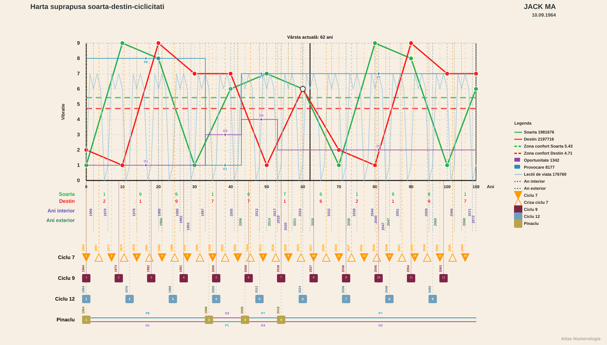

Jack Ma — repere biografice în Harta suprapusă
Soartă, Destin, lecții de viață, cicluri de 9 și 12 ani, oportunități și provocări

Deschide graficul separat · Deschide extragerea completă

Cum sunt citite reperele
- Data nașterii:
10.09.1964. - Zona de confort a Soartei:
5,43. - Zona de confort a Destinului:
4,71. - Valorile Soartei și Destinului sunt interpolate pe liniile continue ale graficului.
- Lecția este cifra activă în anul de viață început la ultima aniversare.
- Pentru evenimentele indicate numai prin lună sau an este redat un interval. Nu este inventată o zi exactă.
Interpretarea este simbolică și descrie concordanțe între evenimente și structura graficului; nu stabilește o cauzalitate istorică.
1995 — descoperirea internetului și China Pages
Vizita în SUA
Jack Ma vizitează Statele Unite ca traducător al unei delegații chineze și înțelege potențialul viitor al internetului.
- Vârsta în cursul anului:
30,31–31,31 ani. - Soarta:
1,15–1,65, în urcare, mult sub zona de confort. - Destinul:
7, constant și peste zona de confort. - Lecția de viață:
1până la 09.09.1995;7începând cu 10.09.1995. - Ciclul de 9 ani: ciclul IV,
27–36 ani. - Ciclul de 12 ani: ciclul III,
24–36 ani. - Pinaclul 1,
0–33 ani: oportunitate1, provocare8.
Destinul 7 este dominant: căutare, observație și înțelegerea unei realități încă puțin vizibile. Soarta foarte joasă, dar ascendentă, indică începutul unei manifestări care nu avea încă amploare publică. Oportunitatea 1 susține inițiativa și deschiderea unui drum nou, iar provocarea 8 pune în față raportul cu puterea economică, organizarea și lumea afacerilor.
Înființarea China Pages
După întoarcerea din SUA, tot în 1995, înființează China Pages, unul dintre primele site-uri chineze.
- Valorile rămân în intervalul anual: Soarta
1,15–1,65, Destinul7. - Ciclul de 9 ani: IV,
27–36 ani; ciclul de 12 ani: III,24–36 ani. - Pinaclul 1: oportunitate
1, provocare8. - Lecția este
1înainte de aniversare și7după aniversare; ziua fondării nu a fost precizată.
China Pages traduce descoperirea Destinului 7 într-un act de pionierat specific oportunității 1. Soarta se afla încă sub confort, ceea ce sugerează un proiect timpuriu, cu vizibilitate și forță de manifestare încă reduse. Provocarea 8 cerea transformarea unei idei într-o structură economică viabilă.
2003–2004 — Taobao și Alipay
2003 — înființarea Taobao
Jack Ma înființează Taobao, platformă de cumpărături customer-to-customer, pentru a contracara expansiunea eBay.
- Vârsta în cursul anului:
38,31–39,31 ani. - Soarta:
5,15–5,65, în urcare; traversează zona de confort în cursul anului. - Destinul:
7, constant și peste zona de confort. - Lecția:
6până la 09.09.2003;7din 10.09.2003. - Ciclul de 9 ani: ciclul V,
36–45 ani. - Ciclul de 12 ani: ciclul IV,
36–48 ani. - Pinaclul 2,
34–43 ani: oportunitate3, provocare1.
Soarta ajunge la pragul de confort, iar inițiativa capătă forță de manifestare. Oportunitatea 3 susține comunicarea, comerțul, rețeaua și conectarea unui număr mare de utilizatori. Provocarea 1 cere asumarea confruntării directe și păstrarea unei identități proprii în fața unui competitor global. Lecția 6 aduce responsabilitatea construirii unei platforme utile comunității, iar 7 accentuează strategia.
Februarie 2004 — înființarea Alipay
În februarie 2004 înființează Alipay, componenta de plată necesară dezvoltării ecosistemului de comerț electronic.
- Vârsta:
39,39–39,47 ani. - Soarta:
5,70–5,73, în urcare și peste zona de confort. - Destinul:
7, constant și peste zona de confort. - Lecția de viață:
7. - Ciclul de 9 ani: V,
36–45 ani. - Ciclul de 12 ani: IV,
36–48 ani. - Pinaclul 2: oportunitate
3, provocare1.
Ambele linii sunt peste confort. Soarta arată capacitate de materializare, iar Destinul 7 susține arhitectura invizibilă, controlul și încrederea necesare unui sistem de plăți. Oportunitatea 3 extinde circulația și conectarea, în timp ce provocarea 1 cere o soluție proprie și curaj decizional.
2010 — extinderea internațională
Aprilie 2010 — înființarea AliExpress
În aprilie 2010 înființează AliExpress, platformă orientată spre comerțul internațional.
- Vârsta:
45,56–45,64 ani. - Soarta:
6,56–6,56, în urcare și peste zona de confort. - Destinul:
3,67–3,62, în coborâre și sub zona de confort. - Lecția de viață:
7. - Ciclul de 9 ani: ciclul VI,
45–54 ani. - Ciclul de 12 ani: ciclul IV,
36–48 ani. - Pinaclul 3,
44–53 ani: oportunitate4, provocare7.
Soarta puternică susține expansiunea vizibilă, în timp ce Destinul coborât arată că sensul profund și direcția interioară se aflau într-o zonă mai solicitantă. Oportunitatea 4 favorizează sistemele, infrastructura și extinderea organizată. Provocarea și lecția 7 dublează tema strategiei, a încrederii și a deciziilor luate pe baza unei viziuni mai greu de validat imediat.
2014 — listarea Alibaba la New York
19 septembrie 2014 — oferta publică inițială
Alibaba se listează la Bursa din New York. Listarea atrage 25 de miliarde de dolari, iar Jack Ma devine atunci cel mai bogat om din China.
- Vârsta:
50 ani și 9 zile, aproximativ50,02 ani. - Soarta:
7,00, aproape de maximul local și peste zona de confort. - Destinul:
1,01, aproape de minimul local și mult sub zona de confort. - Lecția de viață:
6. - Ciclul de 9 ani: ciclul VI,
45–54 ani. - Ciclul de 12 ani: ciclul V,
48–60 ani. - Pinaclul 3: oportunitate
4, provocare7.
Este punctul cu cea mai mare separare dintre cele două linii dintre reperele analizate: Soarta este aproape de vârf, iar Destinul aproape de bază. Manifestarea publică și materială atinge o cotă foarte înaltă, însă direcția interioară este într-o zonă de început și recalibrare. Oportunitatea 4 corespunde consolidării unei structuri uriașe, iar lecția 6 pune accent pe responsabilitatea față de organizație, angajați și ecosistem.
2018–2020 — retragerea și confruntarea cu sistemul
10 septembrie 2018 — anunțarea retragerii
La împlinirea vârstei de 54 de ani, Jack Ma anunță retragerea din funcția de președinte executiv Alibaba.
- Vârsta exactă:
54 ani. - Soarta:
6,60, în coborâre, dar peste zona de confort. - Destinul:
3,00, în urcare, dar sub zona de confort. - Lecția de viață:
1. - Începutul ciclului de 9 ani VII:
54–63 ani. - Ciclul de 12 ani: ciclul V,
48–60 ani. - Începutul Pinaclului 4,
54–108 ani: oportunitate2, provocare7.
Data marchează simultan trei praguri: aniversarea, intrarea într-un nou ciclu de 9 ani și începutul Pinaclului 4. Lecția 1 indică o repoziționare și un nou început. Oportunitatea 2 favorizează predarea, cooperarea și trecerea către un rol mai puțin central, iar provocarea 7 cere redefinirea sensului personal dincolo de poziția publică.
10 septembrie 2019 — plecarea din funcție
La un an după anunț, demisionează din funcția de președinte executiv Alibaba.
- Vârsta exactă:
55 ani. - Soarta:
6,50, în coborâre și peste zona de confort. - Destinul:
3,50, în urcare și sub zona de confort. - Lecția de viață:
7. - Ciclul de 9 ani: VII,
54–63 ani. - Ciclul de 12 ani: V,
48–60 ani. - Pinaclul 4: oportunitate
2, provocare7.
Soarta rămâne puternică, dar își reduce treptat intensitatea, în timp ce Destinul începe să urce. Lecția 7 și provocarea 7 accentuează retragerea, analiza și căutarea unei identități dincolo de conducerea executivă. Oportunitatea 2 susține transferul de responsabilitate și continuitatea prin colaborare.
Octombrie 2020 — discursul de la summitul financiar din Shanghai
Într-un discurs susținut la un summit financiar din Shanghai, Jack Ma critică sistemul de reglementare bancară din China. În contextul acestei ieșiri, IPO-ul de 37 de miliarde de dolari este suspendat, iar el traversează apoi o perioadă lungă în care evită aparițiile publice.
- Vârsta în cursul lunii:
56,06–56,14 ani. - Soarta:
6,39–6,39, în coborâre, dar peste zona de confort. - Destinul:
4,03–4,07, în urcare, dar încă sub zona de confort. - Lecția de viață:
6. - Ciclul de 9 ani: VII,
54–63 ani. - Ciclul de 12 ani: V,
48–60 ani. - Pinaclul 4: oportunitate
2, provocare7.
Soarta indică încă o prezență publică puternică, dar aflată în coborâre. Destinul urcă spre confort fără să-l fi atins, ceea ce sugerează o perioadă de tensiune între expresia exterioară și reașezarea interioară. Lecția 6 aduce tema responsabilității și a consecințelor instituționale. Oportunitatea 2 cere diplomație și cooperare, iar provocarea 7 poate accentua izolarea, confruntarea cu autoritatea și retragerea în analiză.
Sinteză
- 1995: Destinul 7 este puternic, iar Soarta pornește de jos. Mai întâi apare înțelegerea, apoi încercarea de a o materializa.
- 2003–2004: Soarta traversează pragul de confort, iar oportunitatea 3 susține platformele, comunicarea și rețeaua.
- 2010: Soarta rămâne înaltă, oportunitatea 4 cere infrastructură, iar dubla temă 7 aduce strategie și risc de izolare.
- 2014: Soarta atinge aproape valoarea 7, în timp ce Destinul este aproape de 1. Succesul exterior este maxim, dar începe o etapă interioară nouă.
- 2018–2020: ciclul de 9 ani VII și Pinaclul 4 încep odată cu retragerea. Oportunitatea 2 mută accentul spre transfer și cooperare, iar provocarea 7 însoțește retragerea și raportarea dificilă la sistem.